Commissioned Officers
Commissioned Officers lead from the front, taking charge of naval operations, managing ships, submarines, and shore establishments.
Discover the ranks and responsibilities within the Indian Navy, from the highest office of the Admiral of the Fleet to the ranks of Non-Commissioned Officers.
| Category | Rank | Insignia | Description |
|---|---|---|---|
| Admiral of the Fleet | 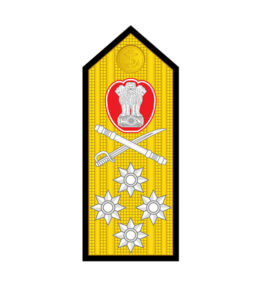 | Highest rank, a ceremonial title rarely held, usually given to a former senior officer. | |
| Commissioned Officers | Admiral | 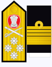 | The highest active rank in the Indian Navy, responsible for overall command. |
| Vice Admiral | 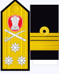 | Assists the Admiral and commands larger formations of the Navy. | |
| Rear Admiral | 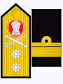 | Commands a fleet or a major naval region. | |
| Commodore | 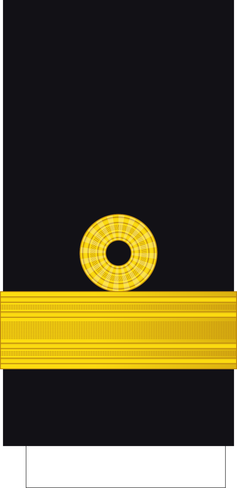 | Responsible for commanding naval groups and squadrons. | |
| Captain | 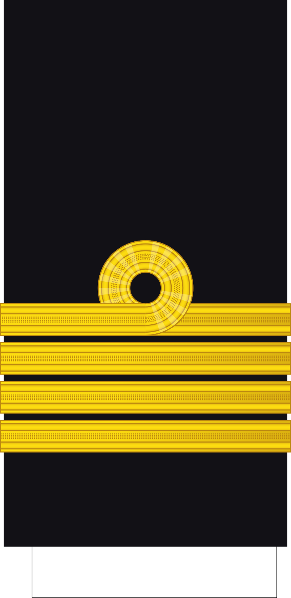 | In charge of a ship, submarine, or shore establishment. | |
| Commander | 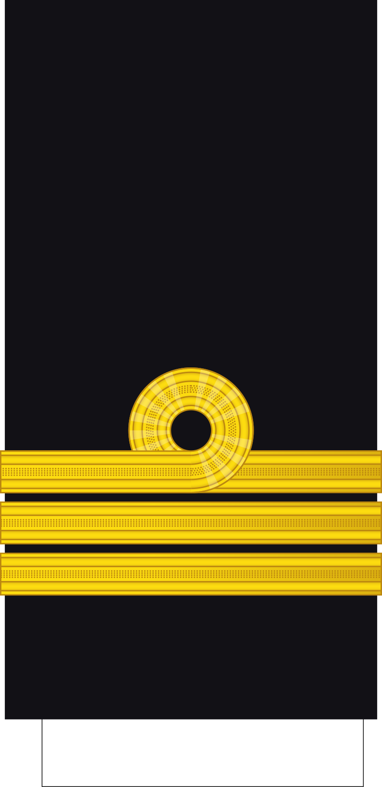 | Commands ships, submarines, or serves in senior staff positions. | |
| Lieutenant Commander | Assists in the management of ships and submarines. | ||
| Lieutenant | 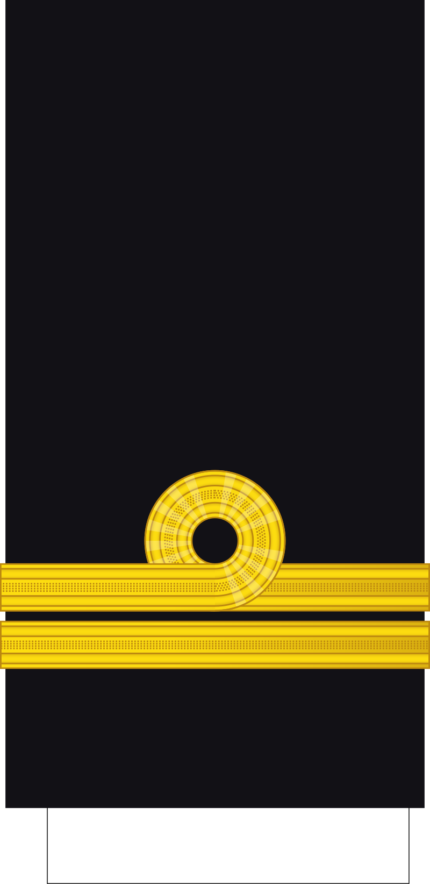 | Junior officer responsible for specific departments within a vessel. | |
| Sub Lieutenant | 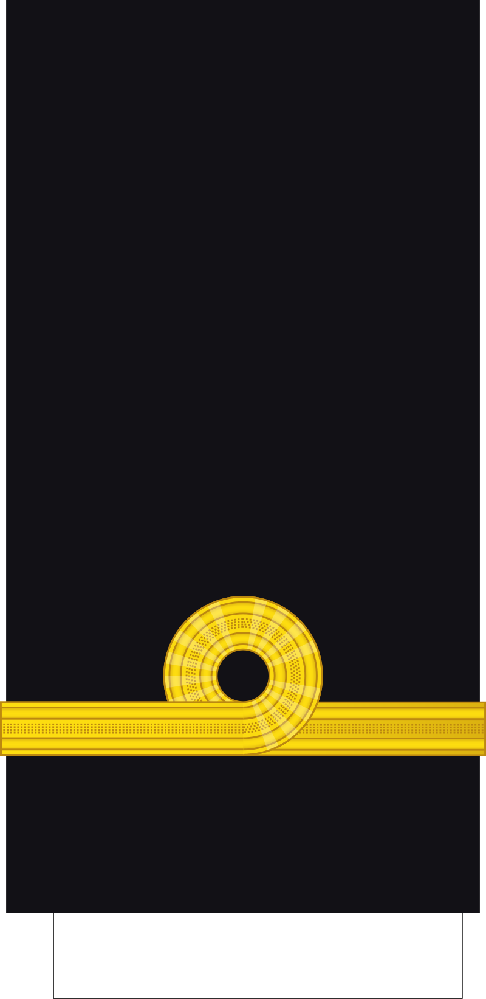 | First rank after commissioning, responsible for assisting senior officers. | |
| Junior Commissioned Officers | Master Chief Petty Officer -1 | 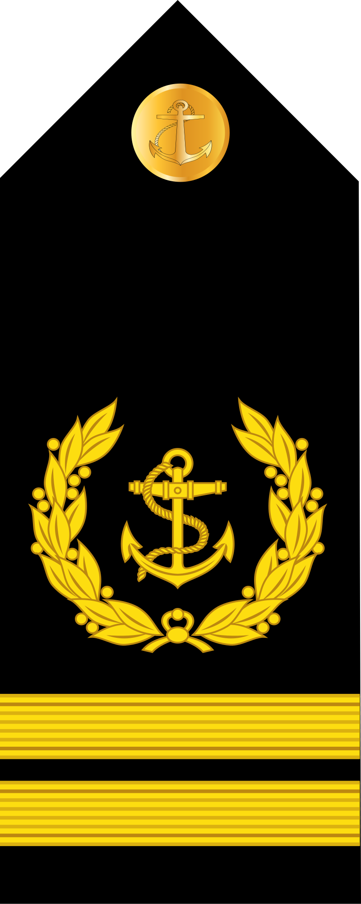 | Supervises the lower ranks and ensures the smooth running of operations. |
| Master Chief Petty Officer -2 | 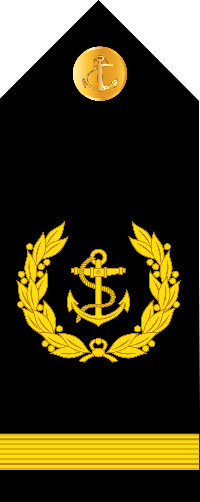 | Assists in the leadership of sailors and technical operations. | |
| Chief Petty Officer | 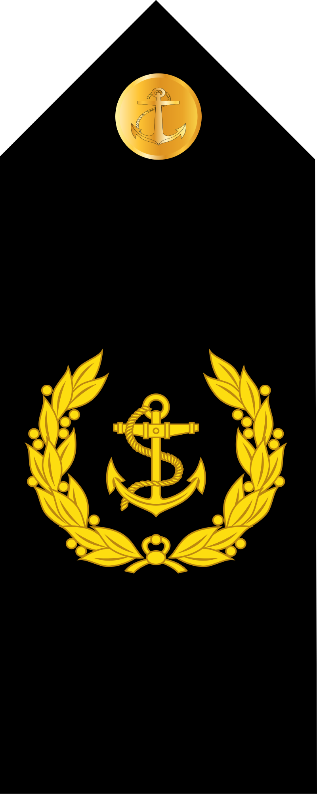 | Assists in the day-to-day operations of the ship. | |
| Non-Commissioned Officers | Petty Officer | 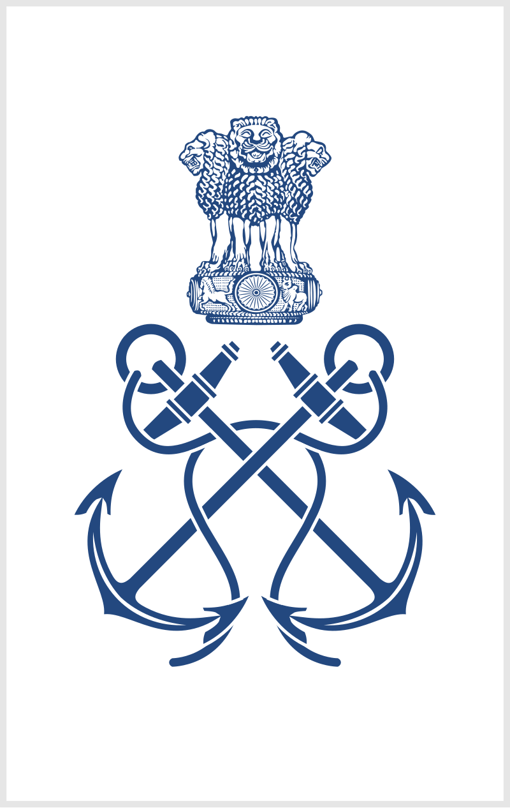 | Entry-level sailors performing operational tasks. |
| Seaman 1st Class | Perform specific duties under the supervision of senior officers. | ||
| Seaman 2nd Class |  |
New recruits who are under training. |
Commissioned Officers lead from the front, taking charge of naval operations, managing ships, submarines, and shore establishments.
Junior Commissioned Officers (JCOs) play an essential role in ensuring the operational efficiency of the Navy at lower ranks.
Non-Commissioned Officers are crucial for day-to-day operations, maintaining discipline, and ensuring that tasks are completed effectively.